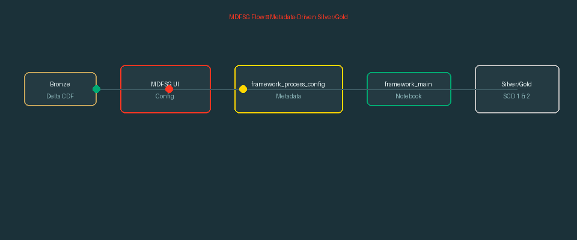
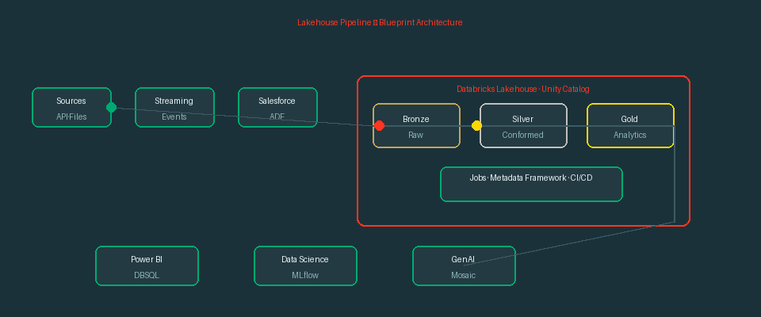
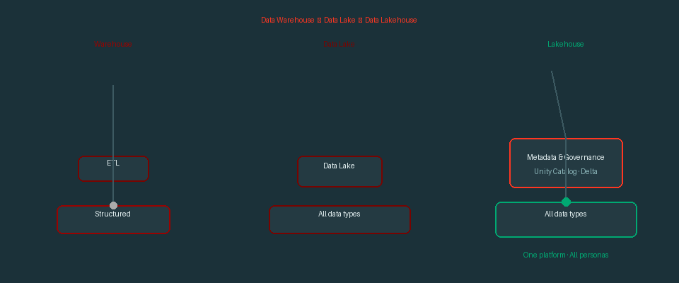

Story 1 — DoD Pipeline
ADF → Salesforce API → S3 → Databricks Bronze → Gold mirrored to Snowflake · 100B+ rows/week
Story 2 — Blueprint / Microprocessor Manufacturer Lift-n-Shift
Custom ingest notebook · parquet/csv/txt/json · Merge/Append/ReplaceWhere · 650+ tables (0.0001 GB–150 TB)
Story 2 — Blueprint / Metadata Framework (MDFSG)
Config-driven Silver/Gold — metadata row instead of new notebook per table
Reference — Data Intelligence Platform
Static PNG (PowerPoint slide 11) — Warehouse → Lake → Lakehouse

Reference — Warehouse → Lake → Lakehouse (animated)
5. PowerPoint-ready animated GIFs
These loop automatically when inserted into a slide (Insert → Pictures). Run python add_diagrams_to_pptx.py to embed them.
MDFSG flow

Lakehouse pipeline

